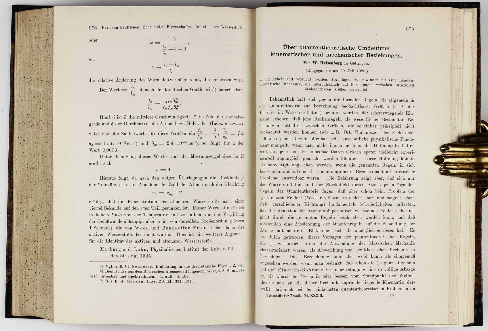

[표현] "오직 관측 가능한 양들 사이의 관계 만으로..."
the phrase to breakthrough
이 위대한 논문은 다음과 같이 시작한다.
우리는 여기서 오직 원리적으로 관측 가능한 물리량들 사이의 관계만 가지고 양자 역학의 이론적 기초를 정립하고자 한다. (The present paper seeks to establish a basis for theoretical quantum mechanics founded exclusively upon relationships between quantities which in principle are observable.—van der Wearden의 영역)
스티븐 와인버그는 그의 책 『최종 이론의 꿈』에서 이 논문을 “마법사의 작품”이라고 불렀다.
최고의 성공을 거둔 이론 물리학자는 대개 둘 중 하나의 부류에 속한다. 현자이거나 또는 마법사이거나. 현자인 물리학자가 물리 문제를 다룰 때는, 자연이 존재하는 방식에 대한 기본적인 아이디어로부터 출발해서 논리 정연하게 생각을 전개한다… 마법사 물리학자는 도대체 논리적 추론이라는 걸 하지 않는 듯 보인다. 그는 모든 중간 단계를 뛰어 넘어서 자연에 대한 새로운 통찰로 그냥 점프해 버린다. 물리 교과서의 저자들은 대개 마법사의 작품을 현자의 작품인 것처럼 보이게 바꾸어 쓴다. 그렇게 하지 않으면 아무도 그걸 이해하지 못할 테니까… 현자인 물리학자의 논문을 이해하는 것은 어렵지 않다. 그러나 마법사 물리학자의 논문은 이해할 수 없을 때가 있다. 이런 의미에서 하이젠베르크의 1925년 논문은 순수한 마법이다.(스티븐 와인버그, 최종 이론의 꿈.)
